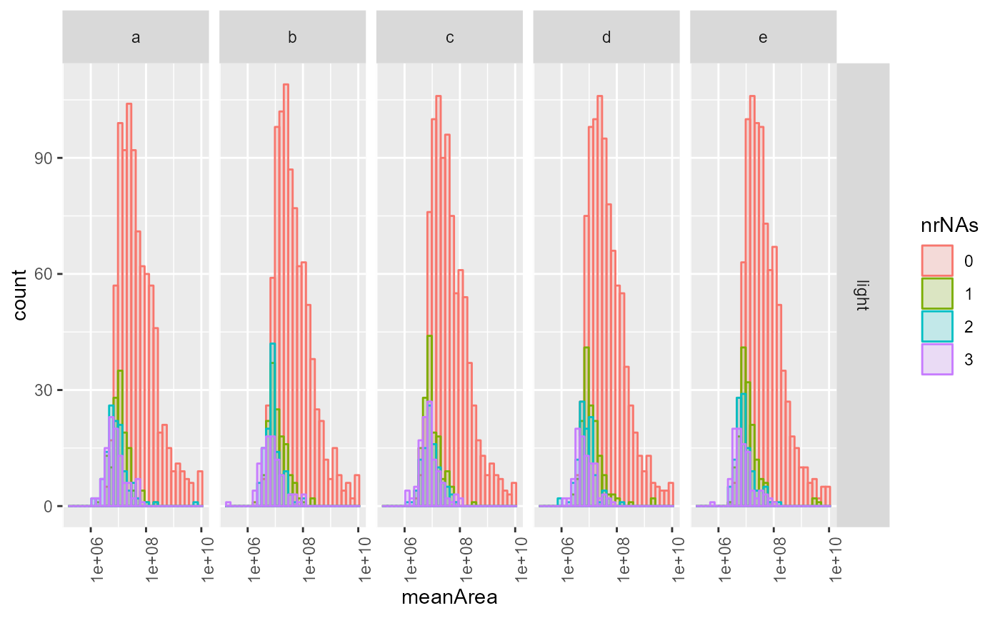
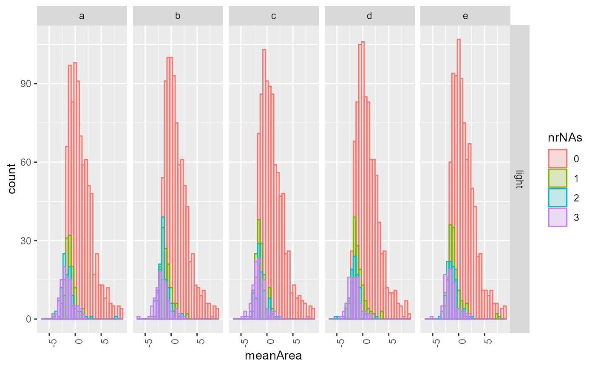

Histogram summarizing missigness
missigness_histogram( x, config, showempty = TRUE, factors = config$table$fkeysDepth() )
Other plotting:
Contrasts_Plotter,
INTERNAL_FUNCTIONS_BY_FAMILY,
medpolishPlydf(),
missingness_per_condition_cumsum(),
missingness_per_condition(),
plot_aggregation(),
plot_hierarchies_add_quantline(),
plot_hierarchies_line_df(),
plot_hierarchies_line(),
plot_intensity_distribution_violin(),
plot_sample_correlation()
Other imputation:
aggregate_contrast(),
get_contrast(),
missigness_impute_factors_interactions(),
missingness_per_condition_cumsum(),
missingness_per_condition()
library(tidyverse) library(LFQService) bb <- LFQService::ionstar configur <- bb$config data <- bb$data xx <- complete_cases(data, configur)#>missigness_histogram(xx, configur)#>#>#> Warning: NaNs produced#> Warning: Transformation introduced infinite values in continuous x-axis#>#> Warning: Removed 393 rows containing non-finite values (stat_bin).#>setNa <- function(x){ifelse(x < 100, NA, x)} data <- data %>% dplyr::mutate(peptide.intensity = setNa(peptide.intensity)) missigness_histogram(data, configur)#>#>#> Warning: NaNs produced#> Warning: Transformation introduced infinite values in continuous x-axis#>#> Warning: Removed 393 rows containing non-finite values (stat_bin).